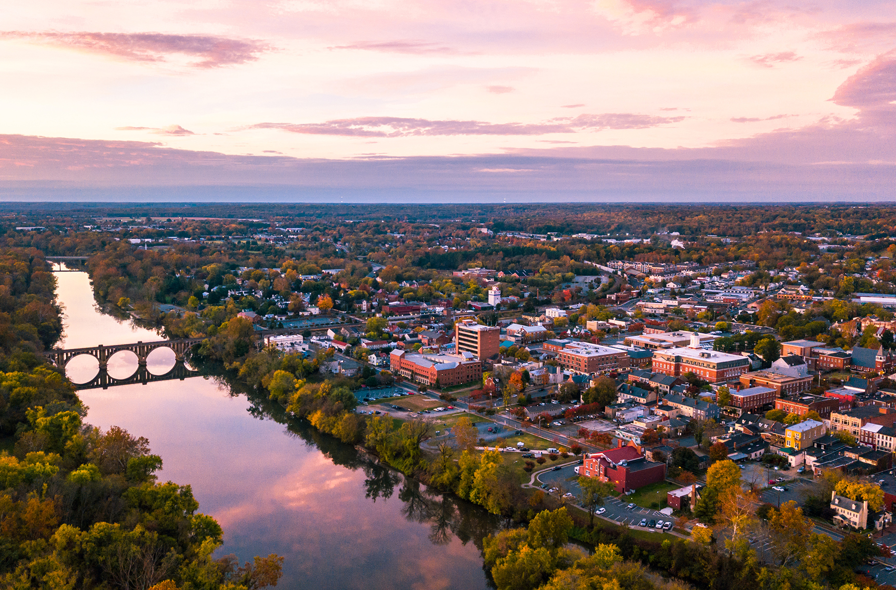
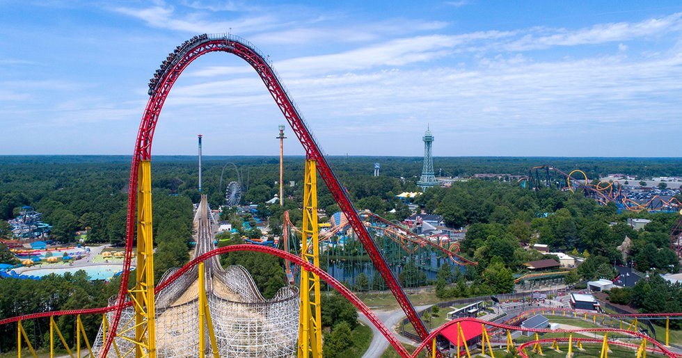
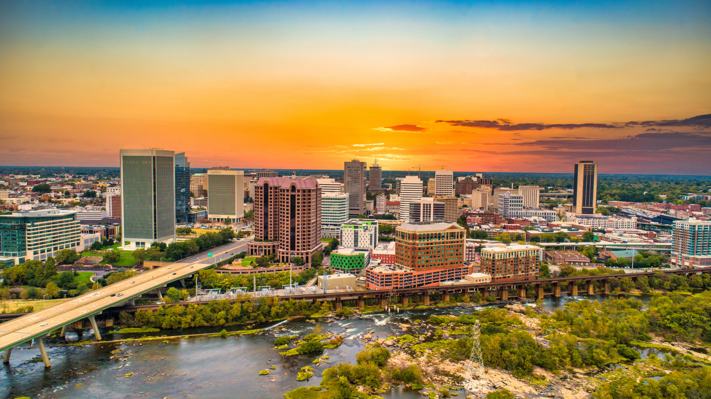

There are many cities and attractions along I-95 in Virginia. This just highlights a few.
Though not technically in Virginia, It's close enough that it gets a mention on here. Washington, DC is the nation's capital. It's got lots of US goveernment stuff, etc. So it's a cool place.
This city is basically the middle point of Washington, DC and Richmond, VA. This isn't the biggest city in the state, but it is growing because of Washington, DC communters moving out there.
You know I had to mention this. This is an amusement park that is in Doswell, VA. It is in between Fredericksburg and Richmond. This is my favorite amusement park ever for now. It also has it's own dedicated I-95 Exit.
Virginia's Capital. This place has had a lot of history as once the capital of the confederacy. This is a cool place to visit if you want to have a good time like i did.
